| MacArthur Fellows Program | |
|---|---|
| Sponsored by | The John D. and Catherine T. MacArthur Foundation |
| Date | 1981 |
| Website | www |
The MacArthur Fellows Program, also known as the MacArthur Fellowship and colloquially called the "Genius Grant",[a] is a prize awarded annually by the John D. and Catherine T. MacArthur Foundation to typically between 20 and 30 individuals working in any field who have shown "extraordinary originality and dedication in their creative pursuits and a marked capacity for self-direction" and are citizens or residents of the United States.[5]
According to the foundation's website, "the fellowship is not a reward for past accomplishments but rather an investment in a person's originality, insight, and potential", but it also says such potential is "based on a track record of significant accomplishments". The amount of the prize is $800,000 paid over five years in quarterly installments. Previously, it was $625,000. This figure was increased from $500,000 in 2013 upon the release of a review[6] of the MacArthur Fellows Program. The award has been called "one of the most significant awards that is truly 'no strings attached'".[7]
The program does not accept applications. Anonymous and confidential nominations are invited by the foundation and reviewed by an anonymous and confidential selection committee of about a dozen people. The committee reviews all nominees and recommends recipients to the president and board of directors. Most new fellows learn of their nomination and award upon receiving a congratulatory phone call. MacArthur Fellow Jim Collins described this experience in an editorial column of The New York Times.[3]
Recipients
As of 2025, since the award's inception in 1981, 1,175 people have been named MacArthur Fellows,[8] ranging in age from 18 to 82.[9]
In the five broad categories defined by the foundation, the breakdown for recipient focus is as follows: Arts 336; Humanities 170; Public Issues 257; STEM 335; and Social Sciences 120.[8]
1981

- A. R. Ammons, poet
- Joseph Brodsky, poet
- John Cairns, molecular biologist
- Gregory V. Chudnovsky, mathematician
- Joel E. Cohen, population biologist
- Robert Coles, child psychiatrist
- Richard Critchfield, essayist
- Shelly Errington, cultural anthropologist
- Howard Gardner, psychologist
- Henry Louis Gates Jr., literary critic
- John Gaventa, sociologist
- Michael Ghiselin, evolutionary biologist
- Stephen Jay Gould, paleontologist
- Ian Graham, archaeologist
- David Hawkins, philosopher
- John P. Holdren, arms control and energy analyst
- Ada Louise Huxtable, architectural critic and historian
- John Imbrie, climatologist
- Robert Kates, geographer
- Raphael Carl Lee, surgeon
- Elma Lewis, arts educator
- Cormac McCarthy, writer
- Barbara McClintock, geneticist
- James Alan McPherson, short story writer and essayist
- Roy P. Mottahedeh, historian
- Richard C. Mulligan, molecular biologist
- Douglas D. Osheroff, physicist
- Elaine H. Pagels, historian of religion
- David Pingree, historian of science
- Paul G. Richards, seismologist
- Robert Root-Bernstein, biologist and historian of science
- Richard Rorty, philosopher
- Lawrence Rosen, attorney and anthropologist
- Carl Emil Schorske, intellectual historian
- Leslie Marmon Silko, writer
- Joseph Hooton Taylor Jr., astrophysicist
- Derek Walcott, poet and playwright
- Robert Penn Warren, poet, novelist, and literary critic
- Stephen Wolfram, computer scientist and physicist[10]
- Michael Woodford, economist
- George Zweig, physicist and neurobiologist[11]
1982
{kind=link}
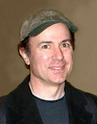
- Fouad Ajami, political scientist
- Charles A. Bigelow, type designer
- Peter Robert Lamont Brown, historian
- Robert Darnton, European historian
- Persi Diaconis, statistician
- William Gaddis, novelist
- Ved Mehta, writer
- Bob Moses, educator and philosopher
- Richard A. Muller, geologist and astrophysicist
- Conlon Nancarrow, composer
- Alfonso Ortiz, cultural anthropologist
- Francesca Rochberg, Assyriologist and historian of science
- Charles Sabel, political scientist and legal scholar
- Ralph Shapey, composer and conductor
- Michael Silverstein, linguist
- Randolph Whitfield Jr., ophthalmologist
- Frank Wilczek, physicist
- Frederick Wiseman, documentary filmmaker
- Edward Witten, physicist, creator of the M-Theory[12]
1983
{kind=link}
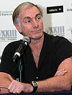
- R. Stephen Berry, physical chemist
- Seweryn Bialer, political scientist
- William C. Clark, ecologist and environmental policy analyst
- Philip D. Curtin, historian of Africa
- William H. Durham, biological anthropologist
- Bradley Efron, statistician
- David L. Felten, neuroscientist
- Randall W. Forsberg, political scientist and arms control strategist
- Alexander L. George, political scientist
- Shelomo Dov Goitein, medieval historian
- Mott T. Greene, historian of science
- James E. Gunn, astronomer
- Ramón A. Gutiérrez, historian
- John J. Hopfield, physicist and biologist
- Béla Julesz, psychologist
- William Kennedy, novelist
- Leszek Kołakowski, historian of philosophy and religion
- Sylvia A. Law, human rights lawyer
- Brad Leithauser, poet and writer
- Lawrence W. Levine, historian
- Ralph Manheim, translator
- Robert K. Merton, historian and sociologist of science
- Walter F. Morris Jr., cultural preservationist
- Charles S. Peskin, mathematician and physiologist
- A.K. Ramanujan, poet, translator, and literary scholar
- Alice M. Rivlin, economist and policy analyst
- Julia Robinson, mathematician
- John Sayles, filmmaker and writer
- Richard M. Schoen, mathematician
- Peter Sellars, theater and opera director
- Karen K. Uhlenbeck, mathematician[13]
- Adrian Wilson, book designer, printer, and book historian
- Irene J. Winter, art historian and archaeologist
- Mark S. Wrighton, chemist[14]
1984
{kind=link}
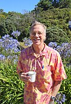
- George W. Archibald, ornithologist
- Shelly Bernstein, pediatric hematologist
- Peter J. Bickel, statistician
- Ernesto J. Cortes Jr., community organizer
- William Drayton, public service innovator
- Sidney Drell, physicist and arms policy analyst
- Mitchell J. Feigenbaum, mathematical physicist
- Michael H. Freedman, mathematician
- Curtis G. Hames, family physician
- Robert Hass, poet, critic, and translator
- Shirley Heath, linguistic anthropologist
- J. Bryan Hehir, religion and foreign policy scholar
- Bette Howland, writer and literary critic
- Bill Irwin, clown, writer, and performance artist
- Robert Irwin, light and space artist
- Ruth Prawer Jhabvala, novelist and screenwriter
- Fritz John, mathematician
- Galway Kinnell, poet
- Henry Kraus, labor and art historian
- Paul Oskar Kristeller, intellectual historian and philosopher
- Sara Lawrence-Lightfoot, educator
- Heather Lechtman, materials scientist and archaeologist
- Michael Lerner, public health leader[15]
- Andrew W. Lewis, medieval historian
- Arnold J. Mandell, neuroscientist and psychiatrist
- Peter Mathews, archaeologist and epigrapher
- Matthew Meselson, geneticist and arms control analyst
- David R. Nelson, physicist
- Beaumont Newhall, historian of photography
- Roger S. Payne, zoologist and conservationist
- Michael Piore, economist
- Edward V. Roberts, disability rights leader
- Judith N. Shklar, political philosopher
- Charles Simic, poet, translator, and essayist
- Elliot Sperling, Tibetan studies scholar
- David Stuart, linguist and epigrapher
- Frank Sulloway, psychologist
- John E. Toews, intellectual historian
- Alar Toomre, astronomer and mathematician
- James Turrell, light sculptor
- Amos Tversky, cognitive scientist
- J. Kirk Varnedoe, art historian
- Bret Wallach, geographer
- Jay Weiss, psychologist
- Arthur Winfree, physiologist and mathematician
- Carl R. Woese, molecular biologist[16]
- Billie Young, community development leader[17]
1985
{kind=link}
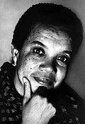
- Joan Abrahamson, community development leader
- John Ashbery, poet
- John F. Benton, medieval historian
- Harold Bloom, literary critic
- Valery Chalidze, physicist and human rights organizer
- William Cronon, environmental historian
- Merce Cunningham, choreographer
- Jared Diamond, environmental historian and geographer
- Marian Wright Edelman, Children's Defense Fund founder
- Morton Halperin, political scientist
- Robert M. Hayes, lawyer and human rights leader
- Edwin Hutchins, cognitive scientist
- Sam Maloof, professional woodworker and furniture maker
- Andrew McGuire, trauma prevention specialist
- Patrick Noonan, conservationist
- George Oster, mathematical biologist
- Thomas G. Palaima, classicist
- Peter Raven, botanist
- Jane S. Richardson, biochemist
- Gregory Schopen, historian of religion
- Franklin Stahl, geneticist
- J. Richard Steffy, nautical archaeologist
- Ellen Stewart, theater director
- Paul Taylor, choreographer, dance company founder
- Shing-Tung Yau, mathematician[18]
1986
{kind=link}
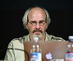
- Paul Adams, neurobiologist
- Milton Babbitt, composer and music theorist
- Christopher Beckwith, philologist
- Richard Benson, photographer
- Lester R. Brown, agricultural economist
- Caroline Bynum, medieval historian
- William A. Christian, historian of religion
- Nancy Farriss, historian
- Benedict Gross, mathematician
- Daryl Hine, poet and translator
- John Robert Horner, paleobiologist
- Thomas C. Joe, social policy analyst
- David Keightley, historian and sinologist
- Albert J. Libchaber, physicist
- David C. Page, molecular geneticist
- George Perle, composer and music theorist
- James Randi, magician
- David Rudovsky, civil rights lawyer
- Robert Shapley, neurophysiologist
- Leo Steinberg, art historian
- Richard P. Turco, atmospheric scientist
- Thomas Whiteside, journalist
- Allan C. Wilson, biochemist
- Jay Wright, poet and playwright
- Charles Wuorinen, composer[19]
1987

- Walter Abish, writer
- Robert Axelrod, political scientist
- Robert F. Coleman, mathematician
- Douglas Crase, poet
- Daniel Friedan, physicist
- David Gross, physicist
- Ira Herskowitz, molecular geneticist
- Irving Howe, literary and social critic
- Wesley Charles Jacobs Jr., rural planner
- Peter Jeffery, musicologist
- Horace Freeland Judson, historian of science
- Stuart Alan Kauffman, evolutionary biologist
- Richard Kenney, poet
- Eric Lander, geneticist and mathematician
- Michael Malin, geologist and planetary scientist
- Deborah W. Meier, education reform leader
- Arnaldo Dante Momigliano, historian
- David Mumford, mathematician
- Tina Rosenberg, journalist
- David Rumelhart, cognitive scientist and psychologist
- Robert Morris Sapolsky, neuroendocrinologist and primatologist
- Meyer Schapiro, art historian
- John H. Schwarz, physicist
- Jon Seger, evolutionary ecologist
- Stephen Shenker, physicist
- David Dean Shulman, historian of religion
- Muriel S. Snowden, community organizer
- Mark Strand, poet and writer
- May Swenson, poet
- Huỳnh Sanh Thông, translator and editor
- William Julius Wilson, sociologist
- Richard Wrangham, primate ethologist[20]
1988
{kind=link}
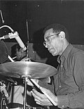
- Charles Archambeau, geophysicist
- Michael Baxandall, art historian
- Ruth Behar, cultural anthropologist
- Ran Blake, composer and pianist
- Charles Burnett, filmmaker
- Philip James DeVries, insect biologist
- Andre Dubus, writer
- Helen T. Edwards, physicist
- Jon H. Else, documentary filmmaker
- John G. Fleagle, primatologist and paleontologist
- Cornell H. Fleischer, Middle Eastern historian
- Getatchew Haile, philologist and linguist
- Raymond Jeanloz, geophysicist
- Marvin Philip Kahl, zoologist
- Naomi Pierce, biologist
- Thomas Pynchon, novelist
- Stephen J. Pyne, environmental historian
- Max Roach, drummer and jazz composer
- Hipolito (Paul) Roldan, community developer
- Anna Curtenius Roosevelt, archaeologist
- David Alan Rosenberg, military historian
- Susan Irene Rotroff, archaeologist
- Bruce Schwartz, figurative sculptor and puppeteer
- Robert Shaw, physicist
- Jonathan Spence, historian
- Noel M. Swerdlow, historian of science
- Gary A. Tomlinson, musicologist
- Alan Walker, paleontologist
- Eddie Williams,[21] policy analyst and civil rights leader
- Rita P. Wright, archaeologist
- Garth Youngberg, agriculturalist[22]
1989
{kind=link}
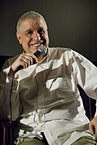
- Anthony Amsterdam, attorney and legal scholar
- Byllye Avery, women's healthcare leader
- Alvin Bronstein, human rights lawyer
- Leo Buss, evolutionary biologist
- Jay Cantor, writer
- George Davis, environmental policy analyst
- Allen Grossman, poet
- John Harbison, composer and conductor
- Keith Hefner, journalist and educator
- Ralf Hotchkiss, rehabilitation engineer
- John Rice Irwin, curator and cultural preservationist
- Daniel Janzen, ecologist
- Bernice Johnson Reagon, music historian, composer, and vocalist
- Aaron Lansky, cultural preservationist
- Jennifer Moody, archaeologist and anthropologist
- Errol Morris, filmmaker
- Vivian Paley, educator and writer
- Richard Powers, novelist
- Ferenc Miszlivetz, sociologist and historian
- Martin Puryear, sculptor
- Theodore Rosengarten, historian
- Margaret W. Rossiter, historian of science
- George Russell, composer and music theorist
- Pam Solo, arms control analyst
- Ellendea Proffer Teasley, translator and publisher
- Claire Van Vliet, book artist
- Baldemar Velasquez, farm labor leader
- Bill Viola, video artist
- Eliot Wigginton, educator
- Patricia Wright, primatologist[23]
1990

- John Christian Bailar, biostatistician
- Martha Clarke, theater director
- Jacques d'Amboise, dance educator
- Guy Davenport, writer, critic, and translator
- Lisa Delpit, education reform leader
- John Eaton, composer
- Paul R. Ehrlich, population biologist
- Charlotte Erickson, historian
- Lee Friedlander, photographer
- Margaret Geller, astrophysicist
- Jorie Graham, poet
- Patricia Hampl, writer
- John Hollander, poet and literary critic
- Thomas Cleveland Holt, social and cultural historian
- David Kazhdan, mathematician
- Calvin King, land and farm development specialist
- M. A. R. Koehl, marine biologist
- Nancy Kopell, mathematician
- Michael Moschen, performance artist
- Gary Nabhan, ethnobotanist
- Sherry Ortner, anthropologist
- Otis Pitts, community development leader
- Yvonne Rainer, filmmaker and choreographer
- Michael Schudson, sociologist
- Rebecca J. Scott, historian
- Marc Shell, scholar
- Susan Sontag, writer and cultural critic
- Richard Stallman, Free Software Foundation founder, copyleft concept inventor
- Guy Tudor, conservationist
- Maria Varela, community development leader
- Gregory Vlastos, classicist and philosopher
- Kent Whealy, preservationist
- Eric Wolf, anthropologist
- Sidney Wolfe, physician
- Robert Woodson, community development leader
- José Zalaquett, human rights lawyer[24]
1991
{kind=link}
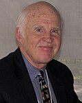
- Jacqueline Barton, biophysical chemist
- Paul Berman, journalist
- James Blinn, computer animator
- Taylor Branch, social historian
- Trisha Brown, choreographer
- Mari Jo Buhle, American historian
- Patricia Churchland, philosopher
- David Donoho, statistician
- Steven Feld, anthropologist
- Alice Fulton, poet
- Guillermo Gómez-Peña, writer and artist
- Jerzy Grotowski, theater director
- David Hammons, artist
- Sophia Bracy Harris, child care leader
- Lewis Hyde, writer
- Ali Akbar Khan, musician
- Sergiu Klainerman, mathematician
- Martin Kreitman, geneticist
- Harlan Lane, psychologist and linguist
- William Linder, community development leader
- Patricia Locke, tribal rights leader
- Mark Morris, choreographer and dancer
- Marcel Ophüls, documentary filmmaker
- Arnold Rampersad, biographer and literary critic
- Gunther Schuller, composer, conductor, jazz historian
- Joel Schwartz, epidemiologist
- Cecil Taylor, jazz pianist and composer
- Julie Taymor, theater director
- David Werner, health care leader
- James Westphal, engineer and scientist
- Eleanor Wilner, poet[25]
1992
{kind=link}
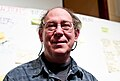
- Janet Benshoof, human rights lawyer
- Robert Blackburn, printmaker
- Unita Blackwell, civil rights leader
- Lorna Bourg, rural development leader
- Stanley Cavell, philosopher
- Amy Clampitt, poet
- Ingrid Daubechies, mathematician
- Wendy Ewald, photographer
- Irving Feldman, poet
- Barbara Fields, historian
- Robert Hall, journalist
- Ann Ellis Hanson, historian
- John Henry Holland, computer scientist
- Wes Jackson, agronomist
- Evelyn Keller, historian and philosopher of science
- Steve Lacy, saxophonist and composer
- Suzanne Lebsock, social historian
- Sharon Long, plant biologist
- Norman Manea, writer
- Paule Marshall, writer
- Michael Massing, journalist
- Robert McCabe, educator
- Susan Meiselas, photojournalist
- Amalia Mesa-Bains, artist and cultural critic
- Stephen Schneider, climatologist
- Joanna Scott, writer
- John T. Scott, artist
- John Terborgh, conservation biologist
- Twyla Tharp, dancer and choreographer
- Philip Treisman, mathematics educator
- Laurel Thatcher Ulrich, historian
- Geerat J. Vermeij, evolutionary biologist
- Günter Wagner, developmental biologist[26]
1993
{kind=link}
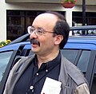
- Nancy Cartwright, philosopher
- Demetrios Christodoulou, mathematician and physicist
- Maria Crawford, geologist
- Stanley Crouch, jazz critic and writer
- Nora England, anthropological linguist
- Paul Farmer, medical anthropologist
- Victoria Foe, developmental biologist
- Ernest Gaines, writer
- Pedro Greer, physician
- Thom Gunn, poet and literary critic
- Ann Hamilton, artist
- Sokoni Karanja, child and family development specialist
- Ann Lauterbach, poet and literary critic
- Stephen Lee, chemist
- Carol Levine, AIDS policy specialist
- Amory Lovins, physicist and energy analyst
- Jane Lubchenco, marine biologist
- Ruth Lubic, nurse and midwife
- Jim Powell, poet, translator, and literary critic
- Margie Profet, evolutionary biologist
- Thomas Scanlon, philosopher
- Aaron Shirley, health care leader
- William Siemering, journalist and radio producer
- Ellen Silbergeld, toxicologist
- Leonard van der Kuijp, philologist and historian
- Frank von Hippel, arms control and energy analyst
- John Edgar Wideman, writer
- Heather Williams, biologist and ornithologist
- Marion Williams, gospel music performer
- Robert H. Williams, physicist and energy analyst
- Henry T. Wright, archaeologist and anthropologist[27]
1994
{kind=link}
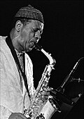
- Robert Adams, photographer
- Jeraldyne Blunden, choreographer
- Anthony Braxton, avant-garde composer and musician
- Rogers Brubaker, sociologist
- Ornette Coleman, jazz performer and composer
- Israel Gelfand, mathematician
- Faye Ginsburg, anthropologist
- Heidi Hartmann, economist
- Bill T. Jones, dancer and choreographer
- Peter E. Kenmore, agricultural entomologist
- Joseph E. Marshall, educator
- Carolyn McKecuen, economic development leader
- Donella Meadows, writer
- Arthur Mitchell, company director and choreographer
- Hugo Morales, radio producer
- Janine Pease, educator
- Willie Reale, theater arts educator
- Adrienne Rich, poet and writer
- Sam-Ang Sam, musician and cultural preservationist
- Jack Wisdom, physicist[28]
1995
{kind=link}
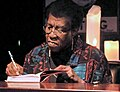
- Allison Anders, filmmaker
- Jed Z. Buchwald, historian
- Octavia E. Butler, science fiction novelist
- Sandra Cisneros, writer and poet
- Sandy Close, journalist
- Frederick C. Cuny, disaster relief specialist
- Sharon Emerson, biologist
- Richard Foreman, theater director
- Alma Guillermoprieto, journalist
- Virginia Hamilton, writer
- Donald Hopkins, physician
- Susan W. Kieffer, geologist
- Elizabeth LeCompte, theater director
- Patricia Nelson Limerick, historian
- Michael Marletta, chemist
- Pamela Matson, ecologist
- Susan McClary, musicologist
- Meredith Monk, vocalist, composer, director
- Rosalind P. Petchesky, political scientist
- Joel Rogers, political scientist
- Cindy Sherman, photographer
- Bryan Stevenson, human rights lawyer
- Nicholas Strausfeld, neurobiologist
- Richard White, historian[29]
1996
{kind=link}
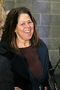
- James Roger Prior Angel, astronomer
- Joaquin Avila, voting rights advocate
- Allan Bérubé, historian
- Barbara Block, marine biologist
- Joan Breton Connelly, classical archaeologist
- Thomas Daniel, biologist
- Martin Daniel Eakes, economic development strategist
- Rebecca Goldstein, writer
- Robert Greenstein, public policy analyst
- Richard Howard, poet, translator, and literary critic
- John Jesurun, playwright
- Richard Lenski, biologist
- Louis Massiah, documentary filmmaker
- Vonnie McLoyd, developmental psychologist
- Thylias Moss, poet and writer
- Eiko Otake and Koma Otake, dancers, choreographers
- Nathan Seiberg, physicist
- Anna Deavere Smith, playwright, journalist, actress
- Dorothy Stoneman, educator
- Bill Strickland, art educator[30]
1997
{kind=link}
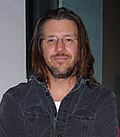
- Luis Alfaro, writer and performance artist
- Lee Breuer, playwright
- Vija Celmins, artist
- Eric Charnov, evolutionary biologist
- Elouise P. Cobell, banker
- Peter Galison, historian
- Mark Harrington, AIDS researcher
- Eva Harris, molecular biologist
- Michael Kremer, economist
- Russell Lande, biologist
- Kerry James Marshall, artist
- Nancy A. Moran, evolutionary biologist and ecologist
- Han Ong, playwright
- Kathleen Ross, educator
- Pamela Samuelson, copyright scholar and activist
- Susan Stewart, literary scholar and poet
- Elizabeth Streb, dancer and choreographer
- Trimpin, sound sculptor
- Loïc Wacquant, sociologist
- Kara Walker, artist
- David Foster Wallace, author and journalist
- Andrew Wiles, mathematician
- Brackette Williams, anthropologist[31]
1998
{kind=link}
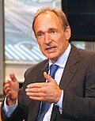
- Janine Antoni, artist
- Ida Applebroog, artist
- Ellen Barry, attorney and human rights activist
- Tim Berners-Lee, inventor of the World Wide Web
- Linda Bierds, poet
- Bernadette Brooten, historian
- John Carlstrom, astrophysicist
- Mike Davis, historian
- Nancy Folbre, economist
- Avner Greif, economist
- Kun-Liang Guan, biochemist
- Gary Hill, artist
- Edward Hirsch, poet, essayist
- Ayesha Jalal, historian
- Charles R. Johnson, writer
- Leah Krubitzer, neuroscientist
- Stewart Kwoh, human rights activist
- Charles Lewis, journalist
- William W. McDonald, rancher and conservationist
- Peter N. Miller, historian
- Don Mitchell, cultural geographer
- Rebecca Nelson, plant pathologist
- Elinor Ochs, linguistic anthropologist
- Ishmael Reed, poet, essayist, novelist
- Benjamin D. Santer, atmospheric scientist
- Karl Sims, computer scientist and artist
- Dorothy Thomas, human rights activist
- Leonard Zeskind, human rights activist
- Mary Zimmerman, playwright[32]
1999
{kind=link}
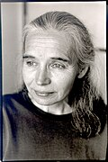
- Jillian Banfield, geologist
- Carolyn Bertozzi, chemist
- Xu Bing, artist and printmaker
- Bruce G. Blair, policy analyst
- John Bonifaz, election lawyer and voting rights leader
- Shawn Carlson, science educator
- Mark Danner, journalist
- Alison L. Des Forges, human rights activist
- Elizabeth Diller, architect
- Saul Friedländer, historian
- Jennifer Gordon, lawyer
- David Hillis, biologist
- Sara Horowitz, lawyer
- Jacqueline Jones, historian
- Laura L. Kiessling, biochemist
- Leslie Kurke, classicist
- David Levering Lewis, biographer and historian
- Juan Maldacena, physicist
- Gay J. McDougall, human rights lawyer
- Campbell McGrath, poet
- Denny Moore, anthropological linguist
- Elizabeth Murray, artist
- Pepón Osorio, artist
- Ricardo Scofidio, architect
- Peter Shor, computer scientist
- Eva Silverstein, physicist
- Wilma Subra, scientist
- Ken Vandermark, saxophonist, composer
- Naomi Wallace, playwright
- Jeffrey Weeks, mathematician
- Fred Wilson, artist
- Ofelia Zepeda, linguist[33]
2000
{kind=link}
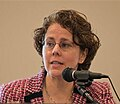
- Susan E. Alcock, archaeologist
- K. Christopher Beard, paleontologist
- Lucy Blake, conservationist
- Anne Carson, poet
- Peter J. Hayes, energy policy activist
- David Isay, radio producer
- Alfredo Jaar, photographer
- Ben Katchor, graphic novelist
- Hideo Mabuchi, physicist
- Susan Marshall, choreographer
- Samuel Mockbee, architect
- Cecilia Muñoz, civil rights policy analyst
- Margaret Murnane, optical physicist
- Laura Otis, literary scholar and historian of science
- Lucia M. Perillo, poet
- Matthew Rabin, economist
- Carl Safina, marine conservationist
- Daniel P. Schrag, geochemist
- Susan E. Sygall, civil rights leader
- Gina G. Turrigiano, neuroscientist
- Gary Urton, anthropologist
- Patricia J. Williams, legal scholar
- Deborah Willis, historian of photography and photographer
- Erik Winfree, computer and materials scientist
- Horng-Tzer Yau, mathematician[34]
2001
{kind=link}
- Andrea Barrett, writer
- Christopher Chyba, astrobiologist
- Michael Dickinson, fly biologist, bioengineer
- Rosanne Haggerty, housing and community development leader
- Lene Hau, physicist
- Dave Hickey, art critic
- Stephen Hough, pianist and composer
- Kay Redfield Jamison, psychologist
- Sandra Lanham, pilot and conservationist
- Iñigo Manglano-Ovalle, artist
- Cynthia Moss, natural historian
- Aihwa Ong, anthropologist
- Dirk Obbink, classicist and papyrologist
- Norman R. Pace, biochemist
- Suzan-Lori Parks, playwright
- Brooks Pate, physical chemist
- Xiao Qiang, human rights leader
- Geraldine Seydoux, molecular biologist
- Bright Sheng, composer
- David Spergel, astrophysicist
- Jean Strouse, biographer
- Julie Su, human rights lawyer
- David Wilson, museum founder[35]
2002
{kind=link}
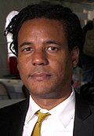
- Danielle Allen, classicist and political scientist
- Bonnie Bassler, molecular biologist
- Ann M. Blair, intellectual historian
- Katherine Boo, journalist
- Paul Ginsparg, physicist
- David B. Goldstein, energy conservation specialist
- Karen Hesse, writer
- Janine Jagger, epidemiologist
- Daniel Jurafsky, computer scientist and linguist
- Toba Khedoori, artist
- Liz Lerman, choreographer
- George E. Lewis, trombonist
- Liza Lou, artist
- Edgar Meyer, bassist and composer
- Jack Miles, writer and Biblical scholar
- Erik Mueggler, anthropologist and ethnographer
- Sendhil Mullainathan, economist
- Stanley Nelson, documentary filmmaker
- Lee Ann Newsom, paleoethnobotanist
- Daniela L. Rus, computer scientist
- Charles C. Steidel, astronomer
- Brian Tucker, seismologist
- Camilo José Vergara, photographer
- Paul Wennberg, atmospheric chemist
- Colson Whitehead, writer[36]
2003
.jpg){kind=link}
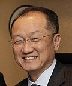
- Guillermo Algaze, archaeologist
- Jim Collins, biomedical engineer
- Lydia Davis, writer and translator
- Erik Demaine, theoretical computer scientist
- Corinne Dufka, human rights researcher
- Peter Gleick, conservation analyst
- Osvaldo Golijov, composer
- Deborah Jin, physicist
- Angela Johnson, writer
- Tom Joyce, blacksmith
- Sarah H. Kagan, gerontological nurse
- Ned Kahn, artist and science exhibit designer
- Jim Yong Kim, public health physician
- Nawal M. Nour, obstetrician and gynecologist
- Loren H. Rieseberg, botanist
- Amy Rosenzweig, biochemist
- Pedro A. Sanchez, agronomist
- Lateefah Simon, women's development leader
- Peter Sís, illustrator
- Sarah Sze, sculptor
- Eve Troutt Powell, historian
- Anders Winroth, historian
- Daisy Youngblood, ceramic artist
- Xiaowei Zhuang, biophysicist[37]
2004
{kind=link}
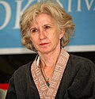
- Angela Belcher, materials scientist and engineer
- Gretchen Berland, physician and filmmaker
- James Carpenter, artist
- Joseph DeRisi, biologist
- Katherine Gottlieb, health care leader
- David Green, technology transfer innovator
- Aleksandar Hemon, writer
- Heather Hurst, archaeological illustrator
- Edward P. Jones, writer
- John Kamm, human rights activist
- Daphne Koller, computer scientist
- Naomi Leonard, engineer
- Tommie Lindsey, school debate coach
- Rueben Martinez, businessman and activist
- Maria Mavroudi, historian
- Vamsi Mootha, physician and computational biologist
- Judy Pfaff, sculptor
- Aminah Robinson, artist
- Reginald Robinson, pianist and composer
- Cheryl Rogowski, farmer
- Amy Smith, inventor and mechanical engineer
- Julie Theriot, microbiologist
- C. D. Wright, poet[38]
2005
{kind=link}
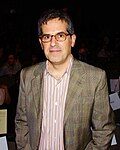
- Marin Alsop, symphony conductor
- Ted Ames, fisherman, conservationist, marine biologist
- Terry Belanger, rare book preservationist
- Edet Belzberg, documentary filmmaker
- Majora Carter, urban revitalization strategist
- Lu Chen, neuroscientist
- Michael Cohen, pharmacist
- Joseph Curtin, violinmaker
- Aaron Dworkin, music educator
- Teresita Fernández, sculptor
- Claire Gmachl, quantum cascade laser engineer
- Sue Goldie, physician and researcher
- Steven Goodman, conservation biologist
- Pehr Harbury, biochemist
- Nicole King, molecular biologist
- Jon Kleinberg, computer scientist
- Jonathan Lethem, novelist
- Michael Manga, geophysicist
- Todd Martinez, theoretical chemist
- Julie Mehretu, painter
- Kevin M. Murphy, economist
- Olufunmilayo Olopade, clinician and researcher
- Fazal Sheikh, photographer
- Emily Thompson, aural historian
- Michael Walsh, vehicle emissions specialist[39]
2006
{kind=link}
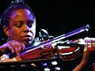
- David Carroll, naturalist author and illustrator
- Regina Carter, jazz violinist
- Kenneth C. Catania, neurobiologist
- Lisa Curran, tropical forester
- Kevin Eggan, biologist
- Jim Fruchterman, technologist, CEO of Benetech
- Atul Gawande, surgeon and author
- Linda Griffith, bioengineer
- Victoria Hale, CEO of OneWorld Health
- Adrian Nicole LeBlanc, journalist and author
- David Macaulay, author and illustrator
- Josiah McElheny, sculptor
- D. Holmes Morton, physician
- John A. Rich, physician
- Jennifer Richeson, social psychologist
- Sarah Ruhl, playwright
- George Saunders, short story writer
- Anna Schuleit, commemorative artist
- Shahzia Sikander, painter
- Terence Tao, mathematician
- Claire J. Tomlin, aviation engineer
- Luis von Ahn, computer scientist
- Edith Widder, deep-sea explorer
- Matias Zaldarriaga, cosmologist
- John Zorn, composer and musician[40]
2007
{kind=link}
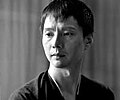
{kind=link}
- Deborah Bial, education strategist
- Peter Cole, translator, poet, publisher
- Lisa Cooper, public health physician
- Ruth DeFries, environmental geographer
- Mercedes Doretti, forensic anthropologist
- Stuart Dybek, short story writer
- Marc Edwards, water quality engineer
- Michael Elowitz, molecular biologist
- Saul Griffith, inventor
- Sven Haakanson, Alutiiq curator, anthropologist, preservationist
- Corey Harris, blues musician
- Cheryl Hayashi, spider silk biologist
- My Hang V. Huynh, chemist
- Claire Kremen, conservation biologist
- Whitfield Lovell, painter and installation artist
- Yoky Matsuoka, neuroroboticist
- Lynn Nottage, playwright
- Mark Roth, biomedical scientist
- Paul Rothemund, nanotechnologist
- Jay Rubenstein, medieval historian
- Jonathan Shay, clinical psychiatrist and classicist
- Joan Snyder, painter
- Dawn Upshaw, vocalist
- Shen Wei, choreographer[41]
2008
{kind=link}
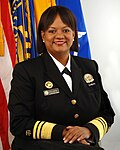
- Chimamanda Ngozi Adichie, novelist
- Will Allen, urban farmer
- Regina Benjamin, rural family doctor
- Kirsten Bomblies, evolutionary plant geneticist
- Tara Donovan, artist
- Andrea Ghez, astrophysicist
- Stephen D. Houston, anthropologist
- Mary Jackson, weaver and sculptor
- Leila Josefowicz, violinist
- Alexei Kitaev, physicist
- Walter Kitundu, instrument maker and composer
- Susan Mango, developmental biologist
- Diane E. Meier, geriatrician
- David R. Montgomery, geomorphologist
- John Ochsendorf, engineer and architectural historian
- Peter Pronovost, critical care physician
- Adam Riess, astrophysicist
- Alex Ross, music critic
- Wafaa El-Sadr, infectious disease specialist
- Nancy Siraisi, historian of medicine
- Marin Soljačić, optical physicist
- Sally Temple, neuroscientist
- Jennifer Tipton, stage lighting designer
- Rachel Wilson, experimental neurobiologist
- Miguel Zenón, saxophonist and composer[42]
2009
.jpg){kind=link}
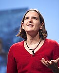
- Lynsey Addario, photojournalist
- Maneesh Agrawala, computer vision technologist
- Timothy Barrett, papermaker
- Mark Bradford, mixed media artist
- Edwidge Danticat, novelist
- Rackstraw Downes, painter
- Esther Duflo, economist
- Deborah Eisenberg, short story writer
- Lin He, molecular biologist
- Peter Huybers, climate scientist
- James Longley, filmmaker
- L. Mahadevan, applied mathematician
- Heather McHugh, poet
- Jerry Mitchell, investigative reporter
- Rebecca Onie, health services innovator
- Richard Prum, ornithologist
- John A. Rogers, applied physicist
- Elyn Saks, mental health lawyer
- Jill Seaman, infectious disease physician
- Beth Shapiro, evolutionary biologist
- Daniel Sigman, biogeochemist
- Mary Tinetti, geriatric physician
- Camille Utterback, digital artist
- Theodore Zoli, bridge engineer[43]
2010
{kind=link}
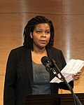
- Amir Abo-Shaeer, physics teacher
- Jessie Little Doe Baird, Wampanoag language preservation and revival
- Kelly Benoit-Bird, marine biologist
- Nicholas Benson, stone carver
- Drew Berry, biomedical animator
- Carlos D. Bustamante, population geneticist
- Matthew Carter, type designer
- David Cromer, theater director and actor
- John Dabiri, biophysicist
- Shannon Lee Dawdy, anthropologist
- Annette Gordon-Reed, American historian
- Yiyun Li, fiction writer
- Michal Lipson, optical physicist
- Nergis Mavalvala, quantum astrophysicist
- Jason Moran, jazz pianist and composer
- Carol Padden, sign language linguist
- Jorge Pardo, installation artist
- Sebastian Ruth, violist, violinist, and music educator
- Emmanuel Saez, economist
- David Simon, author, screenwriter, and producer
- Dawn Song, computer security specialist
- Marla Spivak, entomologist
- Elizabeth Turk, sculptor[44]
2011
{kind=link}
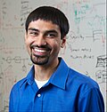
- Jad Abumrad, radio host and producer
- Marie-Therese Connolly, elder rights lawyer
- Roland Fryer, economist
- Jeanne Gang, architect
- Elodie Ghedin, parasitologist and virologist
- Markus Greiner, condensed matter physicist
- Kevin Guskiewicz, sports medicine researcher
- Peter Hessler, long-form journalist
- Tiya Miles, public historian
- Matthew Nock, clinical psychologist
- Francisco Núñez, choral conductor and composer
- Sarah Otto, evolutionary geneticist
- Shwetak Patel, sensor technologist and computer scientist
- Dafnis Prieto, jazz percussionist and composer
- Kay Ryan, poet
- Melanie Sanford, organometallic chemist
- William Seeley, neuropathologist
- Jacob Soll, European historian
- A. E. Stallings, poet and translator
- Ubaldo Vitali, conservator and silversmith
- Alisa Weilerstein, cellist
- Yukiko Yamashita, developmental biologist[45]
2012
.jpg){kind=link}
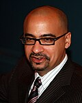
- Natalia Almada, documentary filmmaker
- Uta Barth, photographer
- Claire Chase, arts entrepreneur and flautist
- Raj Chetty, economist
- Maria Chudnovsky, mathematician
- Eric Coleman, geriatrician
- Junot Díaz, fiction writer
- David Finkel, journalist
- Olivier Guyon, optical physicist and astronomer
- Elissa Hallem, neurobiologist
- An-My Lê, photographer
- Sarkis Mazmanian, medical microbiologist
- Dinaw Mengestu, writer
- Maurice Lim Miller, social services innovator
- Dylan C. Penningroth, historian
- Terry Plank, geochemist
- Laura Poitras, documentary filmmaker
- Nancy Rabalais, marine ecologist
- Benoît Rolland, stringed-instrument bow maker
- Daniel Spielman, computer scientist
- Melody Swartz, bioengineer
- Chris Thile, mandolinist and composer
- Benjamin Warf, neurosurgeon[46]
2013
.jpg){kind=link}
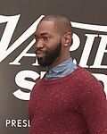
- Kyle Abraham, choreographer and dancer
- Donald Antrim, writer
- Phil Baran, organic chemist
- C. Kevin Boyce, paleobotanist
- Jeffrey Brenner, primary care physician
- Colin Camerer, behavioral economist
- Jeremy Denk, pianist and writer
- Angela Duckworth, research psychologist
- Craig Fennie, materials scientist
- Robin Fleming, medieval historian
- Carl Haber, audio preservationist
- Vijay Iyer, jazz pianist and composer
- Dina Katabi, computer scientist
- Julie Livingston, public health historian and anthropologist
- David Lobell, agricultural ecologist
- Tarell Alvin McCraney, playwright
- Susan Murphy, statistician
- Sheila Nirenberg, neuroscientist
- Alexei Ratmansky, choreographer
- Ana Maria Rey, atomic physicist
- Karen Russell, fiction writer
- Sara Seager, astrophysicist
- Margaret Stock, immigration lawyer
- Carrie Mae Weems, photographer and video artist[47]
2014
{kind=link}
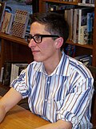
- Danielle Bassett, physicist
- Alison Bechdel, cartoonist and graphic memoirist
- Mary L. Bonauto, civil rights lawyer
- Tami Bond, environmental engineer
- Steve Coleman, jazz composer and saxophonist
- Sarah Deer, legal scholar and advocate
- Jennifer Eberhardt, social psychologist
- Craig Gentry, computer scientist
- Terrance Hayes, poet
- John Henneberger, housing advocate
- Mark Hersam, materials scientist
- Samuel D. Hunter, playwright
- Pamela O. Long, historian of science and technology
- Rick Lowe, public artist
- Jacob Lurie, mathematician
- Khaled Mattawa, translator and poet
- Joshua Oppenheimer, documentary filmmaker
- Ai-jen Poo, labor organizer
- Jonathan Rapping, criminal lawyer
- Tara Zahra, historian of modern Europe
- Yitang Zhang, mathematician[48]
2015
{kind=link}
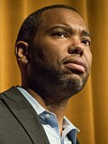
- Patrick Awuah, education entrepreneur
- Kartik Chandran, environmental engineer[49]
- Ta-Nehisi Coates, journalist and memoirist
- Gary Cohen, environmental health advocate
- Matthew Desmond, sociologist
- William Dichtel, chemist
- Michelle Dorrance, tap dancer and choreographer
- Nicole Eisenman, painter
- LaToya Ruby Frazier, photographer and video artist
- Ben Lerner, writer
- Mimi Lien, set designer[50]
- Lin-Manuel Miranda, playwright, songwriter, and performer
- Dimitri Nakassis, classicist
- John Novembre, computational biologist
- Christopher Ré, computer scientist
- Marina Rustow, historian[51]
- Juan Salgado, Chicago-based community leader
- Beth Stevens, neuroscientist
- Lorenz Studer, stem-cell biologist
- Alex Truesdell, designer[52]
- Basil Twist, puppeteer
- Ellen Bryant Voigt, poet
- Heidi Williams, economist
- Peidong Yang, inorganic chemist[53]
2016
{kind=link}
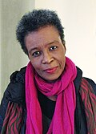
- Ahilan Arulanantham, human rights lawyer
- Daryl Baldwin, linguist and cultural preservationist
- Anne Basting, theater artist and educator
- Vincent Fecteau, sculptor
- Branden Jacobs-Jenkins, playwright
- Kellie Jones, art historian and curator
- Subhash Khot, theoretical computer scientist
- Josh Kun, cultural historian
- Maggie Nelson, writer
- Dianne Newman, microbiologist
- Victoria Orphan, geobiologist
- Manu Prakash, physical biologist and inventor
- José A. Quiñonez, financial services innovator
- Claudia Rankine, poet
- Lauren Redniss, artist and writer
- Mary Reid Kelley, video artist
- Rebecca Richards-Kortum, bioengineer
- Joyce J. Scott, jewelry maker and sculptor
- Sarah Stillman, long-form journalist
- Bill Thies, computer scientist
- Julia Wolfe, composer
- Gene Luen Yang, graphic novelist
- Jin-Quan Yu, synthetic chemist[54]
2017
{kind=link}
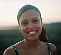
- Njideka Akunyili Crosby, painter
- Sunil Amrith, historian
- Greg Asbed, human rights strategist
- Annie Baker, playwright
- Regina Barzilay, computer scientist
- Dawoud Bey, photographer
- Emmanuel Candès, mathematician and statistician
- Jason De León, anthropologist
- Rhiannon Giddens, musician
- Nikole Hannah-Jones, journalist
- Cristina Jiménez Moreta, activist
- Taylor Mac, performance artist
- Rami Nashashibi, community leader
- Viet Thanh Nguyen, writer
- Kate Orff, landscape architect
- Trevor Paglen, artist
- Betsy Levy Paluck, psychologist
- Derek Peterson, historian
- Damon Rich, designer and urban planner
- Stefan Savage, computer scientist
- Yuval Sharon, opera director
- Tyshawn Sorey, composer
- Gabriel Victora, immunologist
- Jesmyn Ward, writer[55]
2018
{kind=link}
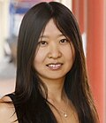
- Matthew Aucoin, composer and conductor
- Julie Ault, artist and curator
- William J. Barber II, pastor
- Clifford Brangwynne, biophysical engineer
- Natalie Diaz, poet
- Livia S. Eberlin, chemist
- Deborah Estrin, computer scientist
- Amy Finkelstein, health economist
- Gregg Gonsalves, global health advocate
- Vijay Gupta, musician
- Becca Heller, lawyer
- Raj Jayadev, community organizer
- Titus Kaphar, painter
- John Keene, writer
- Kelly Link, writer
- Dominique Morisseau, playwright
- Okwui Okpokwasili, choreographer
- Kristina Olson, psychologist
- Lisa Parks, media scholar
- Rebecca Sandefur, legal scholar
- Allan Sly, mathematician
- Sarah T. Stewart-Mukhopadhyay, geologist
- Wu Tsang, filmmaker and performance artist
- Doris Tsao, neuroscientist
- Ken Ward Jr., investigative journalist[56]
2019
{kind=link}
- Elizabeth S. Anderson, philosopher
- Sujatha Baliga, attorney[57]
- Lynda Barry, cartoonist
- Mel Chin, artist
- Danielle Citron, legal scholar
- Lisa Daugaard, criminal justice reformer
- Annie Dorsen, theater artist
- Andrea Dutton, paleoclimatologist
- Jeffrey Gibson, artist
- Mary Halvorson, guitarist
- Saidiya Hartman, literary scholar
- Walter Hood, public artist
- Stacy Jupiter, marine scientist
- Zachary Lippman, plant biologist
- Valeria Luiselli, writer
- Kelly Lytle Hernández, historian
- Sarah Michelson, choreographer
- Jeffrey Alan Miller, literary scholar
- Jerry X. Mitrovica, theoretical geophysicist
- Emmanuel Pratt, urban designer
- Cameron Rowland, artist
- Vanessa Ruta, neuroscientist
- Joshua Tenenbaum, cognitive scientist
- Jenny Tung, evolutionary anthropologist
- Ocean Vuong, writer
- Emily Wilson, classicist and translator[58]
2020
{kind=link}
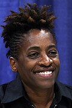
- Isaiah Andrews, econometrician
- Tressie McMillan Cottom, sociologist, writer and public scholar
- Paul Dauenhauer, chemical engineer
- Nels Elde, evolutionary geneticist
- Damien Fair, cognitive neuroscientist
- Larissa FastHorse, playwright
- Catherine Coleman Flowers, environmental health advocate
- Mary L. Gray, anthropologist and media scholar
- N. K. Jemisin, speculative fiction writer
- Ralph Lemon, artist
- Polina V. Lishko, cellular and developmental biologist
- Thomas Wilson Mitchell, property law scholar
- Natalia Molina, American historian
- Fred Moten, cultural theorist and poet
- Cristina Rivera Garza, fiction writer
- Cécile McLorin Salvant, singer and composer
- Monika Schleier-Smith, experimental physicist
- Mohammad R. Seyedsayamdost, biological chemist
- Forrest Stuart, sociologist
- Nanfu Wang, documentary filmmaker
- Jacqueline Woodson, writer[59]
2021
{kind=link}
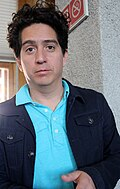
- Hanif Abdurraqib, music critic, essayist and poet
- Daniel Alarcón, writer and radio producer
- Marcella Alsan, physician–economist
- Trevor Bedford, computational virologist
- Reginald Dwayne Betts, poet and lawyer
- Jordan Casteel, painter
- Don Mee Choi, poet and translator
- Ibrahim Cissé, cellular biophysicist
- Nicole Fleetwood, art historian and curator
- Cristina Ibarra, documentary filmmaker
- Ibram X. Kendi, American historian and cultural critic
- Daniel Lind-Ramos, sculptor and painter
- Monica Muñoz Martinez, public historian
- Desmond Meade, civil rights activist
- Joshua Miele, adaptive technology designer
- Michelle Monje, neurologist and neuro-oncologist
- Safiya Noble, digital media scholar
- J. Taylor Perron, geomorphologist
- Alex Rivera, filmmaker and media artist
- Lisa Schulte Moore, landscape ecologist
- Jesse Shapiro, applied microeconomist
- Jacqueline Stewart, cinema studies scholar and curator
- Keeanga-Yamahtta Taylor, historian
- Victor J. Torres, microbiologist
- Jawole Willa Jo Zollar, choreographer and dance entrepreneur[60]
2022
- Jennifer Carlson, sociologist
- Paul Chan, artist
- Yejin Choi, computer scientist
- P. Gabrielle Foreman, historian and academic
- Danna Freedman, chemist and academic
- Martha Gonzalez, musician and academic
- Sky Hopinka, artist and filmmaker
- June Huh, mathematician
- Moriba Jah, astrodynamicist
- Jenna Jambeck, environmental engineer
- Monica Kim, historian and academic
- Robin Wall Kimmerer, botanist and writer
- Priti Krishtel, lawyer
- Joseph Drew Lanham, ornithologist
- Kiese Laymon, writer
- Reuben Jonathan Miller, sociologist and social worker
- Ikue Mori, musician and composer
- Steven Prohira, physicist
- Tomeka Reid, cellist and composer
- Loretta J. Ross, human rights advocate
- Steven Ruggles, historical demographer
- Tavares Strachan, interdisciplinary artist
- Emily Wang, physician and researcher
- Amanda Williams, artist and architect
- Melanie Matchett Wood, mathematician
2023
{kind=link}
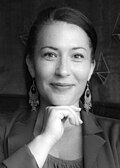
- E. Tendayi Achiume, legal scholar
- Andrea Armstrong, incarceration law scholar
- Rina Foygel Barber, statistician
- Ian Bassin, lawyer and democracy advocate
- Courtney Bryan, composer and pianist
- Jason D. Buenrostro, cellular and molecular biologist
- María Magdalena Campos-Pons, multidisciplinary artist
- Raven Chacon, composer and artist
- Diana Greene Foster, demographer and reproductive health researcher
- Lucy Hutyra, environmental ecologist
- Carolyn Lazard, artist
- Ada Limón, poet
- Lester Mackey, computer scientist and statistician
- Patrick Makuakāne, Kumu hula and cultural preservationist
- Linsey Marr, environmental engineer
- Manuel Muñoz, author
- Imani Perry, interdisciplinary scholar and writer
- Dyani White Hawk, multidisciplinary artist
- A. Park Williams, hydroclimatologist
- Amber Wutich, anthropologist
2024
.jpg){kind=link}
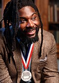
- Loka Ashwood, sociologist
- Ruha Benjamin, transdisciplinary scholar and writer
- Justin Vivian Bond, artist and performer
- Jericho Brown, poet
- Tony Cokes, media artist
- Nicola Dell, computer and information scientist
- Johnny Gandelsman, violinist and producer
- Sterlin Harjo, filmmaker
- Juan Felipe Herrera, poet, educator, and writer
- Ling Ma, writer
- Jennifer L. Morgan, historian
- Martha M. Muñoz, evolutionary biologist
- Shailaja Paik, historian
- Joseph Parker, evolutionary biologist
- Ebony G. Patterson, multimedia artist
- Shamel Pitts, dancer and choreographer
- Wendy Red Star, visual artist
- Jason Reynolds, children's and young adult writer
- Dorothy Roberts, legal scholar and public policy researcher
- Keivan G. Stassun, science educator and astronomer
- Benjamin Van Mooy, oceanographer
- Alice Wong, writer, editor, disability justice activist[61][62]
2025

- Matt Black, photographer
- Garrett Bradley, artist and filmmaker
- Heather Christian, composer and lyricist
- Ángel F. Adames Corraliza, atmospheric scientist
- Nabarun Dasgupta, epidemiologist and harm reduction advocate
- Kristina Douglass, archaeologist
- Kareem El-Badry, astrophysicist
- Jeremy Frey, artist
- Hahrie Han, political scientist
- Tonika Lewis Johnson, photographer and social justice artist
- Ieva Jusionyte, cultural anthropologist
- Toby Kiers, evolutionary biologist
- Jason McLellan, structural biologist
- Tuan Andrew Nguyen, multidisciplinary artist
- Tommy Orange, fiction writer
- Margaret Wickens Pearce, cartographer
- Sébastien Philippe, nuclear security specialist
- Gala Porras-Kim, interdisciplinary artist
- Teresa Puthussery, neurobiologist and optometrist
- Craig Taborn, improvising musician and composer
- William Tarpeh, chemical engineer
- Lauren K. Williams, mathematician[63]
Educational background of recipients
Of the 965 terminal degrees earned by 928 fellows during the period 1981 through 2018, 540 (56%) are doctorates, with the Ph.D. accounting for 514 (53.3%). Ivy league schools awarded 306 (31.7%) degrees to 300 (32.3%) fellows.[64][65]
The award is made to individuals of varying educational background but among the 1131 fellowship awards through the class of 2023, the following ten institutions have the most alumni fellows (a comparatively smaller school, California Institute of Technology had the most per capita, whereas the large Harvard University had the most overall.)[8][66][67]
| Institution | 1131 Fellows (1981–2023):[8] |
|---|---|
| Harvard/Radcliffe | 188 |
| Yale | 95 |
| Berkeley | 78 |
| Princeton | 71 |
| Columbia/Barnard | 65 |
| MIT | 48 |
| Caltech | 43 |
| Stanford | 41 |
| Chicago | 40 |
| Cornell | 38 |
| Oxford | 35 |
Notes
References
- ^ "MacArthur Fellows Frequently Asked Questions". MacArthur Foundation. Retrieved 16 October 2023.
- ^ Conrad, Cecilia A. (20 September 2013). "Five Myths About the MacArthur 'Genius Grants'". MacArthur Foundation. Retrieved 16 October 2023.
- ^ a b Jim Collins (19 September 2005). "It isn't easy being a genius". The New York Times. Archived from the original on 18 April 2015. Retrieved 16 October 2023.
- ^ Viet Thanh Nguyen (14 April 2018). "Don't call me a genius". The New York Times. Retrieved 16 October 2023.
- ^ "MacArthur Fellows Strategy". MacArthur Foundation. Archived from the original on 2 April 2012. Retrieved 20 November 2015.
- ^ "Review Affirms Impact and Inspiration of MacArthur Fellows Program". MacArthur Foundation. 27 August 2013. Archived from the original on 29 November 2020. Retrieved 18 July 2016.
- ^ Harris, Dianne (2007). The Complete Guide to Writing Effective & Award-Winning Grants: Step-By-Step Instructions. Atlantic Publishing Company. pp. 85–86. ISBN 9781601380463. Archived from the original on 26 May 2013.
- ^ a b c d "All Fellows". MacArthur Foundation. Retrieved 15 April 2023.
- ^ Corfu, Diane (May 2007). "Picking Winners". Harvard Business Review. Archived from the original on 7 May 2011.
- ^ The John D. and Catherine T. MacArthur Foundation. "Meet the June-1981 MacArthur Fellows". Archived from the original on 28 December 2014. Retrieved 1 July 2013.
- ^ The John D. and Catherine T. MacArthur Foundation. "Meet the December-1981 MacArthur Fellows". Archived from the original on 7 May 2015. Retrieved 1 July 2013.
- ^ The John D. and Catherine T. MacArthur Foundation. "Meet the August-1982 MacArthur Fellows". Archived from the original on 24 July 2014. Retrieved 1 July 2013.
- ^ The John D. and Catherine T. MacArthur Foundation. "Meet the August-1983 MacArthur Fellows". Archived from the original on 7 May 2015. Retrieved 1 July 2013.
- ^ The John D. and Catherine T. MacArthur Foundation. "Meet the February-1983 MacArthur Fellows". Archived from the original on 1 February 2014. Retrieved 1 July 2013.
- ^ MacArthur Foundation. "Michael Lerner". MacArthur Fellows Program. Archived from the original on 18 October 2020. Retrieved 23 July 2018.
- ^ The John D. and Catherine T. MacArthur Foundation. "Meet the March-1984 MacArthur Fellows". Archived from the original on 20 December 2013. Retrieved 1 July 2013.
- ^ The John D. and Catherine T. MacArthur Foundation. "Meet the November-1984 MacArthur Fellows". Archived from the original on 4 October 2013. Retrieved 1 July 2013.
- ^ The John D. and Catherine T. MacArthur Foundation. "Meet the 1985 MacArthur Fellows". Archived from the original on 7 May 2015. Retrieved 1 July 2013.
- ^ The John D. and Catherine T. MacArthur Foundation. "Meet the 1986 MacArthur Fellows". Archived from the original on 7 May 2015. Retrieved 1 July 2013.
- ^ The John D. and Catherine T. MacArthur Foundation. "Meet the 1987 MacArthur Fellows". Archived from the original on 20 October 2013. Retrieved 1 July 2013.
- ^ "Williams, Eddie N. 1932–". encyclopedia.com. Archived from the original on 22 September 2015. Retrieved 13 September 2015.
- ^ The John D. and Catherine T. MacArthur Foundation. "Meet the 1988 MacArthur Fellows". Archived from the original on 15 June 2013. Retrieved 1 July 2013.
- ^ The John D. and Catherine T. MacArthur Foundation. "Meet the 1989 MacArthur Fellows". Archived from the original on 7 May 2014. Retrieved 1 July 2013.
- ^ The John D. and Catherine T. MacArthur Foundation. "Meet the 1990 MacArthur Fellows". Archived from the original on 4 October 2013. Retrieved 1 July 2013.
- ^ The John D. and Catherine T. MacArthur Foundation. "Meet the 1991 MacArthur Fellows". Archived from the original on 24 September 2013. Retrieved 1 July 2013.
- ^ The John D. and Catherine T. MacArthur Foundation. "Meet the 1992 MacArthur Fellows". Archived from the original on 31 December 2014. Retrieved 1 July 2013.
- ^ The John D. and Catherine T. MacArthur Foundation. "Meet the 1993 MacArthur Fellows". Archived from the original on 16 July 2014. Retrieved 1 July 2013.
- ^ The John D. and Catherine T. MacArthur Foundation. "Meet the 1994 MacArthur Fellows". Archived from the original on 16 July 2014. Retrieved 1 July 2013.
- ^ The John D. and Catherine T. MacArthur Foundation. "Meet the 1995 MacArthur Fellows". Archived from the original on 27 November 2013. Retrieved 1 July 2013.
- ^ The John D. and Catherine T. MacArthur Foundation. "Meet the 1996 MacArthur Fellows". Archived from the original on 4 December 2014. Retrieved 1 July 2013.
- ^ The John D. and Catherine T. MacArthur Foundation. "Meet the 1997 MacArthur Fellows". Archived from the original on 1 December 2012. Retrieved 1 July 2013.
- ^ The John D. and Catherine T. MacArthur Foundation. "Meet the 1998 MacArthur Fellows". Archived from the original on 29 July 2014. Retrieved 1 July 2013.
- ^ The John D. and Catherine T. MacArthur Foundation. "Meet the 1999 MacArthur Fellows". Archived from the original on 30 June 2013. Retrieved 1 July 2013.
- ^ The John D. and Catherine T. MacArthur Foundation. "Meet the 2000 MacArthur Fellows". Archived from the original on 19 October 2014. Retrieved 1 July 2013.
- ^ The John D. and Catherine T. MacArthur Foundation. "Meet the 2001 MacArthur Fellows". Archived from the original on 16 September 2013. Retrieved 1 July 2013.
- ^ The John D. and Catherine T. MacArthur Foundation. "Meet the 2002 MacArthur Fellows". Archived from the original on 4 September 2013. Retrieved 1 July 2013.
- ^ The John D. and Catherine T. MacArthur Foundation. "Meet the 2003 MacArthur Fellows". Archived from the original on 5 September 2013. Retrieved 1 July 2013.
- ^ The John D. and Catherine T. MacArthur Foundation. "Meet the 2004 MacArthur Fellows". Archived from the original on 4 October 2013. Retrieved 1 July 2013.
- ^ The John D. and Catherine T. MacArthur Foundation. "Meet the 2005 MacArthur Fellows". Archived from the original on 4 July 2013. Retrieved 1 July 2013.
- ^ The John D. and Catherine T. MacArthur Foundation. "Meet the 2006 MacArthur Fellows". Archived from the original on 4 September 2013. Retrieved 1 July 2013.
- ^ The John D. and Catherine T. MacArthur Foundation. "Meet the 2007 MacArthur Fellows". Archived from the original on 4 July 2013. Retrieved 1 July 2013.
- ^ The John D. and Catherine T. MacArthur Foundation. "Meet the 2008 MacArthur Fellows". Archived from the original on 29 August 2013. Retrieved 1 July 2013.
- ^ The John D. and Catherine T. MacArthur Foundation. "Meet the 2009 MacArthur Fellows". Archived from the original on 4 July 2013. Retrieved 1 July 2013.
- ^ The John D. and Catherine T. MacArthur Foundation. "Meet the 2010 MacArthur Fellows". Archived from the original on 4 July 2013. Retrieved 1 July 2013.
- ^ The John D. and Catherine T. MacArthur Foundation. "Meet the 2011 MacArthur Fellows". Archived from the original on 4 July 2013. Retrieved 1 July 2013.
- ^ The John D. and Catherine T. MacArthur Foundation. "Meet the 2012 MacArthur Fellows". Archived from the original on 2 July 2013. Retrieved 1 July 2013.
- ^ "Meet the 2013 MacArthur Fellows". MacArthur Foundation. Archived from the original on 25 September 2013.
- ^ "Meet the 2014 MacArthur Fellows". MacArthur Foundation. Archived from the original on 17 September 2014. Retrieved 17 September 2014.
- ^ "Kartik Chandran | Fu Foundation School of Engineering and Applied Science". Engineering.columbia.edu. Archived from the original on 3 October 2015. Retrieved 1 October 2015.
- ^ Baker, Jeremy M. (22 September 2014). "Mimi Lien Creates Art With Her Sets". American Theatre. Archived from the original on 17 May 2021. Retrieved 29 September 2015.
- ^ "Display Person – Department of Near Eastern Studies". Princeton.edu. 27 October 2010. Archived from the original on 30 September 2015. Retrieved 29 September 2015.
- ^ "adaptive1". Archived from the original on 15 May 2013.
- ^ "Meet the 2015 MacArthur Fellows". The John D. and Catherine T. MacArthur Foundation. Archived from the original on 30 September 2015. Retrieved 29 September 2015.
- ^ "Class of 2016 – MacArthur Foundation". www.macfound.org. Archived from the original on 22 September 2016.
- ^ "Class of 2017 – MacArthur Foundation". www.macfound.org. Archived from the original on 15 January 2021. Retrieved 11 October 2017.
- ^ Gibson, Caitlin (4 October 2018). "MacArthur 'genius' grant winners ponder a new future: 'Your life can change in an instant.'". The Washington Post. Archived from the original on 24 February 2020. Retrieved 8 March 2022.
- ^ She prefers that her name be uncapitalized. Kelly, John (26 September 2019). "Restorative Justice Leader sujatha baliga Named a MacArthur Genius". The Chronicle of Social Change. Retrieved 19 April 2023.
- ^ DeShong, Travis (25 September 2019). "MacArthur 'genius' grants launch winners from obscurity: 'Now I feel like I'm working with a face'". The Washington Post. Archived from the original on 4 January 2022. Retrieved 8 March 2022.
- ^ McCarthy, Ellen (6 October 2020). "Proving good things can happen in 2020, the MacArthur Foundation names 21 new 'geniuses'". The Washington Post. Archived from the original on 8 March 2022. Retrieved 8 March 2022.
- ^ McCarthy, Ellen (28 September 2021). "MacArthur will give 25 new fellows $625,000 each to pursue 'high-risk, high-reward' work". The Washington Post. Archived from the original on 28 September 2021. Retrieved 28 September 2021.
- ^ Blair, Elizabeth (1 October 2024). "Here's who made the 2024 MacArthur Fellows list". NPR. Retrieved 1 October 2024.
- ^ "Meet the 2024 MacArthur Fellows". MacArthur Foundation. Retrieved 1 October 2024.
- ^ Blair, Elizabeth (8 October 2025). "Thinkers, dreamers, doers: Here's who made the 2025 MacArthur Fellow list". NPR. Retrieved 25 April 2026.
- ^ Amadu Kaba (30 April 2020). MacArthur Fellows, 1981-2018: Gender, Race and Educational Attainment (Report). Vol. 10. Sociology Mind. ISSN 2160-083X.
- ^ Rachel Sugar (29 May 2015). "Where MacArthur 'Geniuses' Went to College". businessinsider.com. Retrieved 5 November 2020.
- ^ "Does Alma Mater Really Matter? Where MacArthur 'Genius' Fellows Went to College" (PDF). www.macfound.org.
- ^ "MacArthur fellows where fellows received undergraduate degrees (1981–2014)" (PDF). Archived from the original (PDF) on 22 July 2015.